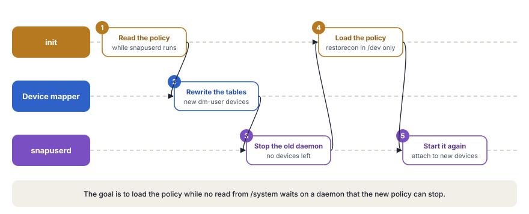

A chain of trusted programs starts the device, and each program prepares the ground for the next one, up to the home screen.
You press the power button, and some seconds later the home screen appears. In that short time, the device runs code from at least eight different programs. Each program checks or prepares something, then gives control to the next one. If one link of this chain fails, the device does not start or starts in a safe state.
In this chapter, you follow the whole chain in the Android Open Source Project (AOSP). You start with the code in the chip and the bootloader, which verifies every image before it runs. You then study init, the first process of user space, in detail. It mounts the partitions, loads the security policy, reads its configuration files and starts every native service. Finally, you see how Zygote prepares the Java framework and how system_server starts more than 100 system services.
The chapter also covers the property system, the shutdown sequence, the tools that measure boot time and the changes in Android 17. Most code in this chapter lives in system/core/init/, external/avb/ and frameworks/base/.
The boot path at a glance
The boot crosses four layers. The firmware runs first, then the Linux kernel, then native programs in user space and last the Java framework. Time moves down the next diagram, and each stage sits in the layer where its code runs.
![Four columns show the layers of the system. Time flows from top to bottom. In the firmware, the Boot ROM runs fixed code in the chip, and the bootloader verifies and loads the images. The Linux kernel starts the drivers and then runs /init. In native user space, the first stage of init mounts the partitions, and the second stage starts services and properties. In the Java framework, Zygote preloads and forks, system_server starts more than 100 services, and the home screen appears when sys.boot_completed is 1.](../../assets/img/diagrams/bi-boot-journey.svg)
- Boot ROM. The System on a Chip (SoC) runs a small program from read-only memory in the chip. This code sets up clocks and the memory controller, then loads the first bootloader from a fixed place in storage. This stage belongs to the chip vendor and is not part of AOSP.
- Bootloader. The bootloader starts the main memory and important devices. It runs Android Verified Boot (AVB), selects the A or B slot and loads the kernel, the ramdisk and the Device Tree Blob (DTB). Qualcomm devices use the Android Bootloader (ABL), and many other chips use U-Boot.
- Linux kernel. The kernel starts its subsystems, probes the drivers and unpacks the initial file system in memory. It then starts the program
/initas process 1 (PID 1). - First stage of init. This stage runs from the ramdisk. It loads kernel modules, mounts
/systemand/vendorand then starts the fullinitfrom/system. - Second stage of init. After a short step that loads the SELinux policy, the second stage reads the
.rcfiles, starts the property service and starts the native daemons. Examples areservicemanager,logdandsurfaceflinger. - Zygote. Zygote starts the Android Runtime (ART), preloads the framework classes and resources and waits for requests to fork new processes.
- system_server. The first child of Zygote hosts the system services, for example the activity manager, the package manager and the window manager. They start in a fixed order of boot phases.
- Home screen. The launcher starts, the boot animation stops and the property
sys.boot_completedbecomes 1. All apps and services now know that the device is ready.
Think of a restaurant on a busy morning. The owner arrives first and checks the seals on the doors and the delivery boxes. Only then does the owner give the keys to the manager. The manager follows a printed checklist. Power on, then fridges, then ovens and then the staff.
The head chef prepares all sauces and cut vegetables once, in one large kitchen station. Each new cook gets an exact copy of that station and starts to cook at once. The front-of-house manager opens the tables for guests area by area. Last, somebody turns the sign on the door to Open.
The owner is the bootloader with verified boot. The manager is init, and the checklist is init.rc. The head chef is Zygote, and the copied station is the shared memory of each new app. The front-of-house manager is system_server, and the Open sign is sys.boot_completed.
The bootloader and the boot images
The bootloader is the first program that a device maker can change. Its work is the same on all Android devices, although its code is different for each chip.
- It starts the main memory and the devices that the boot needs.
- It runs AVB, so only trusted code starts.
- On a device with A/B partitions, it selects the slot for this boot.
- It loads the kernel, the ramdisk and the DTB into memory.
- It writes the kernel command line and the bootconfig, which carry values such as
androidboot.force_normal_boot. - It jumps to the entry point of the kernel.
Three boot partitions
Modern devices split the boot material across three partitions. This split lets Google update the generic parts and lets the vendor update the parts for its hardware, each on its own schedule.
bootholds the Generic Kernel Image (GKI). Up to Android 12, it also holds the generic ramdisk. The header format lives insystem/tools/mkbootimg/include/bootimg/bootimg.hand records sizes, the page size, the operating system (OS) version and the header version.vendor_bootarrived with Android 11 and header version 3. It holds the vendor ramdisk with the files for the device, the vendor kernel modules and the DTB.init_bootarrived with Android 13 and header version 4. It takes the generic ramdisk out ofboot. This ramdisk contains first-stageinit, so Google can now updateinitapart from the kernel.
![Three partitions on the left. boot holds the generic kernel and, up to Android 12, the generic ramdisk. vendor_boot holds the vendor ramdisk, vendor kernel modules and the device tree blob. init_boot holds the generic ramdisk with first-stage init. The bootloader loads, verifies and joins them. The result is the Linux kernel, a combined ramdisk with a generic layer and a vendor layer, the device tree blob and the kernel command line with bootconfig. Then /init runs as process 1. A timeline shows header version 2 up to Android 10, version 3 in Android 11 with vendor_boot and version 4 in Android 13 with init_boot.](../../assets/img/diagrams/bi-boot-images.svg)
Android Verified Boot
AVB makes sure that every byte of code and data that the device runs comes from a trusted source. The library lives in external/avb/libavb/, and its main header libavb.h includes all other headers. Each bootloader links this library and supplies a small set of operations, for example to read a partition or to read a rollback index.
The trust starts in hardware. The chip holds a hash of a key in fuses, and the Boot ROM uses it to check the bootloader. The bootloader holds the public key for the next step. That step is the vbmeta image, a small signed structure that describes all other partitions.
![The Boot ROM holds a key hash fused into the chip and checks the bootloader. The bootloader runs libavb with avb_slot_verify. The vbmeta partition has a 256-byte header with the magic AVB0, flags and a rollback index, then authentication data with the signature, then auxiliary data with descriptors and the public key. A hash descriptor covers boot, vendor_boot and dtbo, checked as a whole at load. A hashtree descriptor covers system, vendor and product, checked block by block at read. A chain descriptor hands over to vbmeta_system with its own key. The rollback index is compared with a minimum in RPMB storage. A lower index gives ERROR_ROLLBACK_INDEX. If the result is OK, the device boots with dm-verity parameters. An error on a locked device stops the boot or shows a red warning. An error on an unlocked device boots with an orange warning.](../../assets/img/diagrams/bi-avb-chain.svg)
The vbmeta image
The vbmeta image has three blocks. A header with a fixed size of 256 bytes comes first. The authentication data follows with the hash and the signature. The auxiliary data comes last with the descriptors and the public key.
#define AVB_VBMETA_IMAGE_HEADER_SIZE 256
#define AVB_MAGIC "AVB0"
#define AVB_MAGIC_LEN 4
#define AVB_RELEASE_STRING_SIZE 48
typedef enum {
AVB_VBMETA_IMAGE_FLAGS_HASHTREE_DISABLED = (1 << 0),
AVB_VBMETA_IMAGE_FLAGS_VERIFICATION_DISABLED = (1 << 1)
} AvbVBMetaImageFlags;The first flag turns off dm-verity while the device runs. The second flag turns off all checks, also the parse of the descriptors. A device accepts these flags only when its bootloader is unlocked.
The descriptors in the auxiliary data tell the bootloader what to check.
- A hash descriptor holds the hash of a whole image, for example
boot,vendor_bootordtbo. The bootloader reads the image and compares the hash before it uses the image. - A hashtree descriptor holds the root hash of a large partition, for example
system. The kernel checks this partition block by block while the device runs. - A chain descriptor passes trust to another vbmeta image with its own key, for example
vbmeta_system. A partner can then sign its partitions without the key of the device maker.
The verification process
The bootloader calls avb_slot_verify() for the selected slot. The function reads the vbmeta partition, checks its signature against the trusted key and compares the rollback index. It then reads each partition with a hash descriptor and compares the hashes. The result is one value of an enumeration.
typedef enum {
AVB_SLOT_VERIFY_RESULT_OK,
AVB_SLOT_VERIFY_RESULT_ERROR_OOM,
AVB_SLOT_VERIFY_RESULT_ERROR_IO,
AVB_SLOT_VERIFY_RESULT_ERROR_VERIFICATION,
AVB_SLOT_VERIFY_RESULT_ERROR_ROLLBACK_INDEX,
AVB_SLOT_VERIFY_RESULT_ERROR_PUBLIC_KEY_REJECTED,
AVB_SLOT_VERIFY_RESULT_ERROR_INVALID_METADATA,
AVB_SLOT_VERIFY_RESULT_ERROR_UNSUPPORTED_VERSION,
AVB_SLOT_VERIFY_RESULT_ERROR_INVALID_ARGUMENT
} AvbSlotVerifyResult;| Result | Meaning |
|---|---|
ERROR_VERIFICATION | A hash does not match, so somebody changed the content of a partition. |
ERROR_ROLLBACK_INDEX | The image is older than the minimum that the device accepts. |
ERROR_PUBLIC_KEY_REJECTED | The key that signed the image is not a trusted key of the device. |
ERROR_UNSUPPORTED_VERSION | The image needs a newer version of libavb. |
On a locked device, an error stops the boot. On an unlocked device, the bootloader shows a warning screen and continues. If the result is OK, the bootloader adds the dm-verity parameters to the kernel command line and starts the kernel.
dm-verity checks large partitions while they run
A hash of the full system partition at every boot takes too much time. AVB therefore uses dm-verity, a target of the Linux device mapper. It checks each block when a program reads it. The check uses a Merkle tree, which is a tree of hashes. Each leaf is the hash of one data block, and each higher node is the hash of the nodes below it. Only the root hash needs protection, and the signed vbmeta holds it.
![On the left, a hash tree. The root hash sits at the top, then two level-1 hashes, four level-2 hashes and eight data blocks. A read of block B5 hashes the block and walks up through its parents to the root. The root hash comes from the signed vbmeta. On the right, the mode MANAGED_RESTART_AND_EIO, the usual mode on production devices. In restart mode, corruption causes a reboot. After a reboot for hashtree corruption, the device enters EIO mode, where apps get I/O errors and the device does not reboot again. A new OS version returns the device to restart mode. The state lives in avb.managed_verity_mode. Other modes are RESTART, EIO, LOGGING and PANIC.](../../assets/img/diagrams/bi-verity-tree.svg)
When a hash does not match, the kernel acts according to the error mode.
typedef enum {
AVB_HASHTREE_ERROR_MODE_RESTART_AND_INVALIDATE,
AVB_HASHTREE_ERROR_MODE_RESTART,
AVB_HASHTREE_ERROR_MODE_EIO,
AVB_HASHTREE_ERROR_MODE_LOGGING,
AVB_HASHTREE_ERROR_MODE_MANAGED_RESTART_AND_EIO,
AVB_HASHTREE_ERROR_MODE_PANIC
} AvbHashtreeErrorMode;Production devices use MANAGED_RESTART_AND_EIO. At first, corruption causes a reboot. If the reason for the last reboot was corruption, the device changes to the EIO mode. In this mode, the read returns an input and output error to the app, and the device does not reboot again. The value avb.managed_verity_mode keeps this state. A new OS version resets the device to the restart mode.
Two other modes have special uses. The mode RESTART_AND_INVALIDATE marks the slot as bad and needs CONFIG_DM_VERITY_AVB in the kernel. Only old Android Things devices use it. The LOGGING mode is for development on unlocked devices.
Rollback protection
An attacker can try to install an old, signed version of Android with a known weakness. Rollback indexes stop this attack.
- Each image carries a number. Every vbmeta image holds a rollback index that only goes up from release to release.
- The device stores a minimum. A storage area that resists tampering keeps the lowest index that the device accepts. On embedded MultiMediaCard (eMMC) and Universal Flash Storage (UFS), this area is usually the Replay Protected Memory Block (RPMB).
- The check compares both values. If the index in the image is lower than the stored minimum,
avb_slot_verify()returnsERROR_ROLLBACK_INDEX. - A good boot raises the minimum. After a successful boot, the device writes the current index as the new minimum.
Boot modes and recovery
The recovery system installs updates and erases user data. Its code lives in bootable/recovery/. Both stages of init share one enumeration of boot modes.
enum class BootMode {
NORMAL_MODE,
RECOVERY_MODE,
CHARGER_MODE,
};A/B devices have no separate recovery partition. The recovery ramdisk comes from the normal boot image. The bootloader tells init which path to take through one value.
bool ForceNormalBoot(const std::string& cmdline, const std::string& bootconfig) {
return bootconfig.find("androidboot.force_normal_boot = \"1\"") != std::string::npos ||
cmdline.find("androidboot.force_normal_boot=1") != std::string::npos;
}If the value is 1, init boots Android. Else it boots recovery, and first-stage init skips the normal mount of the partitions. In charger mode, the device shows only a battery animation, so init loads fewer modules and starts fewer services.
init, the first process
init is the most important process in user space. It has the process ID 1, and every other process descends from it. If init stops, the kernel panics. These are its main tasks.
- Mount the file systems.
- Load the SELinux policy.
- Start and watch all native daemons, and restart them after a crash.
- Own the property system.
- Carry out requests to reboot or to shut down.
Why init has two stages
The design of init solves a problem of order. The SELinux policy lives on /system. But some process must mount /system first, and that process is init itself. Therefore init runs in stages. The first stage runs from the ramdisk without a policy. It mounts the partitions and then starts the full binary from /system, which loads the policy and continues under it.
All stages use the same source file as their entry point, system/core/init/main.cpp. The arguments decide which role the binary plays.
int main(int argc, char** argv) {
#if __has_feature(address_sanitizer)
__asan_set_error_report_callback(AsanReportCallback);
#elif __has_feature(hwaddress_sanitizer)
__hwasan_set_error_report_callback(AsanReportCallback);
#endif
// Boost prio which will be restored later
setpriority(PRIO_PROCESS, 0, -20);
if (!strcmp(basename(argv[0]), "ueventd")) {
return ueventd_main(argc, argv);
}
if (argc > 1) {
if (!strcmp(argv[1], "subcontext")) {
android::base::InitLogging(argv, &android::base::KernelLogger);
const BuiltinFunctionMap& function_map = GetBuiltinFunctionMap();
return SubcontextMain(argc, argv, &function_map);
}
if (!strcmp(argv[1], "selinux_setup")) {
return SetupSelinux(argv);
}
if (!strcmp(argv[1], "second_stage")) {
return SecondStageMain(argc, argv);
}
}
#if defined(FIRST_STAGE_INIT) || defined(RECOVERY)
return FirstStageMain(argc, argv);
#else
LOG(FATAL) << "Second-stage init requires an argument to main()";
#endif
}![The main function of init in system/core/init/main.cpp first raises its priority to minus 20 and restores it before the main loop. It then checks its arguments from top to bottom. If the program name is ueventd, ueventd_main creates device nodes. If the first argument is subcontext, SubcontextMain runs vendor commands in the vendor context. If it is selinux_setup, SetupSelinux loads the policy. If it is second_stage, SecondStageMain sets up properties, rc files and the main loop. With no argument, FirstStageMain runs, but only in the ramdisk build. The /system/bin/init binary aborts in that case.](../../assets/img/diagrams/bi-init-modes.svg)
Two details in this function are important. First, init raises its own priority to -20, the highest value, at once. The second stage sets it back to 0 just before its main loop. Second, the call of FirstStageMain() without an argument exists only in a build with FIRST_STAGE_INIT or RECOVERY. The ramdisk holds this small build, and its entry point first_stage_main.cpp calls FirstStageMain() directly. The full binary /system/bin/init stops with a fatal error if it starts without an argument.
First-stage init
The function FirstStageMain() in system/core/init/first_stage_init.cpp runs in an almost empty world. No /dev, no /proc and no log exist yet. If this function fails, the device does not boot. Its work falls into four phases.
![Four phases from left to right. Phase one creates basic file systems, namely tmpfs on /dev, devpts, proc with hidepid=2, sysfs, selinuxfs and the nodes /dev/kmsg with mode 0600 and /dev/null. Phase two loads kernel modules from the list for the boot mode, serially or in parallel, and respects page-size folders. Phase three resumes from hibernation if asked, creates block devices, installs reboot handlers and mounts /system and /vendor with dm-verity. Phase four frees the ramdisk, points output to /dev/kmsg and runs execv for selinux_setup. Below, the CHECKCALL macro collects errors in a list until /dev/kmsg is ready. The parallel mode comes from androidboot.load_modules_parallel. Not set means NONE, and the values true, performance and conservative select NORMAL, PERFORMANCE and CONSERVATIVE.](../../assets/img/diagrams/bi-first-stage.svg)
Phase 1, the basic file systems
The function first records the start time. It then mounts the file systems that every later step needs.
int FirstStageMain(int argc, char** argv) {
boot_clock::time_point start_time = boot_clock::now();
std::vector<std::pair<std::string, int>> errors;
#define CHECKCALL(x) \
if ((x) != 0) errors.emplace_back(#x " failed", errno);
// Clear the umask.
umask(0);
CHECKCALL(clearenv());
CHECKCALL(setenv("PATH", _PATH_DEFPATH, 1));
CHECKCALL(mount("tmpfs", "/dev", "tmpfs", MS_NOSUID, "mode=0755"));
CHECKCALL(mkdir("/dev/pts", 0755));
CHECKCALL(mkdir("/dev/socket", 0755));
CHECKCALL(mkdir("/dev/dm-user", 0755));
CHECKCALL(mount("devpts", "/dev/pts", "devpts", 0, NULL));
CHECKCALL(mount("proc", "/proc", "proc", 0,
"hidepid=2,gid=" MAKE_STR(AID_READPROC)));
CHECKCALL(mount("sysfs", "/sys", "sysfs", 0, NULL));
CHECKCALL(mount("selinuxfs", "/sys/fs/selinux", "selinuxfs", 0, NULL));
CHECKCALL(mknod("/dev/kmsg", S_IFCHR | 0600, makedev(1, 11)));
CHECKCALL(mknod("/dev/random", S_IFCHR | 0666, makedev(1, 8)));
CHECKCALL(mknod("/dev/urandom", S_IFCHR | 0666, makedev(1, 9)));
CHECKCALL(mknod("/dev/ptmx", S_IFCHR | 0666, makedev(5, 2)));
CHECKCALL(mknod("/dev/null", S_IFCHR | 0666, makedev(1, 3)));
// ...The macro CHECKCALL does not stop at the first error. It adds each failure to a list, because no log exists yet. Without /dev/kmsg, init has no place to write a message. The code also makes three choices for security.
- The option
hidepid=2on/prochides the details of other processes from users without root. - The mode 0600 on
/dev/kmsggives only root access to the kernel log. - The mount of
selinuxfson/sys/fs/selinuxprepares the later load of the policy.
After these mounts, init can finally write to the kernel log. It now reports the errors from the list. If the list has an error, the boot stops.
SetStdioToDevNull(argv);
// Now that tmpfs is mounted on /dev and we have /dev/kmsg, we can actually
// talk to the outside world...
InitKernelLogging(argv);
if (!errors.empty()) {
for (const auto& [error_string, error_errno] : errors) {
LOG(ERROR) << error_string << " " << strerror(error_errno);
}
LOG(FATAL) << "Init encountered errors starting first stage, aborting";
}
LOG(INFO) << "init first stage started!";Phase 2, the kernel modules
A GKI kernel keeps many drivers in modules. The driver for the storage controller can be one of them. Therefore init must load modules before it can mount any partition.
boot_clock::time_point module_start_time = boot_clock::now();
int module_count = 0;
BootMode boot_mode = GetBootMode(cmdline, bootconfig);
if (!LoadKernelModules(boot_mode, want_console, want_parallel_mode, want_parallel_test,
module_count)) {
if (want_console != FirstStageConsoleParam::DISABLED) {
LOG(ERROR) << "Failed to load kernel modules, starting console";
} else {
LOG(FATAL) << "Failed to load kernel modules";
}
}
if (module_count > 0) {
auto module_elapse_time = std::chrono::duration_cast<std::chrono::milliseconds>(
boot_clock::now() - module_start_time);
setenv(kEnvInitModuleDurationMs,
std::to_string(module_elapse_time.count()).c_str(), 1);
}The function LoadKernelModules() looks for a folder under /lib/modules/ that matches the version of the running kernel. The boot mode selects the list of modules. Normal boots use modules.load, recovery uses modules.load.recovery and charger mode uses modules.load.charger. The library libmodprobe then loads the modules one by one or in parallel.
bool retval = (want_parallel_mode != Modprobe::LoadParallelMode::NONE)
? m.LoadModulesParallel(std::thread::hardware_concurrency(),
want_parallel_mode, want_parallel_test)
: m.LoadListedModules(!want_console);The parallel load of modules is no longer a simple switch. The value androidboot.load_modules_parallel in the bootconfig accepts true for the NORMAL mode, performance and conservative. Each mode sets how hard libmodprobe works through the graph of dependencies in parallel. Without the value, the mode is NONE. A separate value androidboot.load_modules_parallel_test=true turns on a test mode.
The search for module folders now also knows the page size. It skips folders with the suffix _16k or _64k unless the suffix matches the page size of the running kernel. One /lib/modules tree can thus ship modules for 4 KB, 16 KB and 64 KB pages side by side.
Phase 3, the partitions
With the storage driver in place, init can mount the important partitions. In Android 17, a short step runs first. MaybeResumeFromHibernation() reads androidboot.hibernation_resume_device. If the value exists, the function writes it to /sys/power/resume, and the kernel restores a saved memory image instead of a cold boot. Then the first-stage mount runs.
if (!fsm) {
fsm = CreateFirstStageMount(cmdline);
}
if (!fsm) {
LOG(FATAL) << "FirstStageMount not available";
}
if (!created_devices && !fsm->DoCreateDevices()) {
LOG(FATAL) << "Failed to create devices required for first stage mount";
} else if (REBOOT_BOOTLOADER_ON_PANIC && !AttemptingToBootNewSlot()) {
InstallRebootSignalHandlers();
}
if (!fsm->DoFirstStageMount()) {
LOG(FATAL) << "Failed to mount required partitions early ...";
}DoCreateDevices() creates the block devices that the mount needs. DoFirstStageMount() reads the first-stage entries of the fstab, sets up dm-verity with the root hashes from vbmeta and mounts /system, /vendor, /product and the other early partitions. On devices with dynamic partitions, it also maps the logical partitions inside the super partition.
Look at the place of InstallRebootSignalHandlers(). These handlers reboot the device to the bootloader if init crashes. Up to Android 16, init installed them at the very start. In Android 17, the code installs them only after the block devices exist and only when the device does not try a new A/B slot. An early handler can otherwise reboot the device again and again into a slot that is known to be bad.
Phase 4, the handover
First-stage init now frees the ramdisk, because nothing needs it any more. It then replaces itself with the full binary from /system.
if (old_root_dir && old_root_info.st_dev != new_root_info.st_dev) {
FreeRamdisk(old_root_dir.get(), old_root_info.st_dev);
}
// ...
const char* path = "/system/bin/init";
const char* args[] = {path, "selinux_setup", nullptr};
auto fd = open("/dev/kmsg", O_WRONLY | O_CLOEXEC);
dup2(fd, STDOUT_FILENO);
dup2(fd, STDERR_FILENO);
close(fd);
execv(path, const_cast<char**>(args));
// execv() only returns if an error happened, in which case we
// panic and never fall through this conditional.
PLOG(FATAL) << "execv(\"" << path << "\") failed";The call execv() keeps the process but loads a new program into it. The process ID stays 1. Before the call, the code also puts its start time into the environment through kEnvFirstStageStartedAt. The second stage reads this value later and records how long each stage took.
SELinux setup
The second program image of process 1 runs SetupSelinux() in system/core/init/selinux.cpp. A long comment at the top of this file explains the strategy. Old devices use one monolithic policy file, /sepolicy. Devices with Project Treble use a split policy. The final policy combines parts from /system, /system_ext, /vendor, /product and /odm, and each partition can update its part. A device usually ships a precompiled form of the combined policy, so the boot does not need to compile it.
int SetupSelinux(char** argv) {
SetStdioToDevNull(argv);
InitKernelLogging(argv);
// ...
SelinuxSetupKernelLogging();
bool use_overlays = EarlySetupOverlays();
if (IsMicrodroid()) {
LoadSelinuxPolicyMicrodroid();
} else {
LoadSelinuxPolicyAndroid();
}
SelinuxSetEnforcement();
// ...
if (selinux_android_restorecon("/system/bin/init", 0) == -1) {
PLOG(FATAL) << "restorecon failed of /system/bin/init failed";
}
// ...
const char* path = "/system/bin/init";
const char* args[] = {path, "second_stage", nullptr};
execv(path, const_cast<char**>(args));The step restorecon on /system/bin/init is the key to the next transition. It gives the file its correct label from the policy. When the next execv() starts the same file again, the policy moves the process from the kernel domain into the init domain.
The policy load during a Virtual A/B update
A device in the middle of a Virtual A/B update reads /system through snapshots. A daemon in user space, snapuserd, serves these snapshots through dm-user devices. This daemon started before any policy existed, so the new policy can stop it. If a read from /system then waits on the stopped daemon, the boot hangs. The code avoids this problem in five steps.

// We use a five-step process to address this:
// (1) Read the policy into a string, with snapuserd running.
// (2) Rewrite the snapshot device-mapper tables, to generate new dm-user
// devices and to flush I/O.
// (3) Kill snapuserd, which no longer has any dm-user devices to attach to.
// (4) Load the sepolicy and issue critical restorecons in /dev, carefully
// avoiding anything that would read from /system.
// (5) Re-launch snapuserd and attach it to the dm-user devices from step (2).
void LoadSelinuxPolicyAndroid() {
MountMissingSystemPartitions();
LOG(INFO) << "Opening SELinux policy";
std::string policy;
ReadPolicy(&policy);
auto snapuserd_helper = SnapuserdSelinuxHelper::CreateIfNeeded();
if (snapuserd_helper) {
snapuserd_helper->StartTransition();
}
LoadSelinuxPolicy(policy);
if (snapuserd_helper) {
snapuserd_helper->FinishTransition();
snapuserd_helper = nullptr;
}
}After the policy load, SelinuxSetEnforcement() sets the enforcing mode. The next diagram shows the three program images of process 1 side by side.
![Three frames from left to right, all with process ID 1. The first stage runs /init from the ramdisk in the kernel domain. It mounts /dev, /proc and /sys, loads kernel modules, mounts /system and /vendor and frees the ramdisk. An execv starts /system/bin/init selinux_setup, still in the kernel domain. It reads and loads the policy, sets enforcing mode and runs restorecon on /system/bin/init. A second execv starts /system/bin/init second_stage in the init domain. It starts the property service, parses the rc files and runs the main loop forever. The environment carries data forward, for example the start time that becomes ro.boottime.init.](../../assets/img/diagrams/bi-exec-chain.svg)
Second-stage init
The third program image of process 1 runs SecondStageMain() in system/core/init/init.cpp. This function is the real conductor of user space. It never returns.
int SecondStageMain(int argc, char** argv) {
if (REBOOT_BOOTLOADER_ON_PANIC && !AttemptingToBootNewSlot()) {
InstallRebootSignalHandlers();
}
boot_clock::time_point start_time = boot_clock::now();
trigger_shutdown = [](const std::string& command) {
shutdown_state.TriggerShutdown(command);
};
SetStdioToDevNull(argv);
InitKernelLogging(argv);
LOG(INFO) << "init second stage started!";A fast series of steps for setup follows. The next code shows the most important calls in their order.
PropertyInit();
// Umount second stage resources after property service has read the .prop files.
UmountSecondStageRes();
// ...
MountExtraFilesystems();
// Now set up SELinux for second stage.
SelabelInitialize();
SelinuxRestoreContext();
Epoll epoll;
if (auto result = epoll.Open(); !result.ok()) {
PLOG(FATAL) << result.error();
}
// ...
InstallSignalFdHandler(&epoll);
InstallInitNotifier(&epoll);
StartPropertyService(&property_fd);
// ...
ActionManager& am = ActionManager::GetInstance();
ServiceList& sm = ServiceList::GetInstance();
LoadBootScripts(am, sm);- Properties.
PropertyInit()creates the property areas in shared memory and loads the values from thebuild.propfiles. - Labels.
SelinuxRestoreContext()gives the correct SELinux labels to the nodes in/devthat the first stage created without a policy. - Event loop.
Epollopens the event loop ofinit. Two calls register the sources of events. The first one handles signals, and the second one handles a wake request from other threads. - Property service.
StartPropertyService()starts a separate thread that accepts property requests from other processes. - Scripts.
LoadBootScripts()reads all.rcfiles into a list of actions and a list of services.
The function also calls SetupMountNamespaces(), records the boot times of the earlier stages and writes the properties for a Generic System Image (GSI). These steps come back later in this chapter.
Read the boot scripts
static void LoadBootScripts(ActionManager& action_manager, ServiceList& service_list) {
Parser parser = CreateParser(action_manager, service_list);
std::string bootscript = GetProperty("ro.boot.init_rc", "");
if (bootscript.empty()) {
parser.ParseConfig("/system/etc/init/hw/init.rc");
if (!parser.ParseConfig("/system/etc/init")) {
late_import_paths.emplace_back("/system/etc/init");
}
parser.ParseConfig("/system_ext/etc/init");
if (!parser.ParseConfig("/vendor/etc/init")) {
late_import_paths.emplace_back("/vendor/etc/init");
}
if (!parser.ParseConfig("/odm/etc/init")) {
late_import_paths.emplace_back("/odm/etc/init");
}
if (!parser.ParseConfig("/product/etc/init")) {
late_import_paths.emplace_back("/product/etc/init");
}
} else {
parser.ParseConfig(bootscript);
}
}The main file /system/etc/init/hw/init.rc comes first. Its import lines take effect at the end of that file. The folders follow in a fixed order, namely /system, /system_ext, /vendor, /odm and /product. Inside each folder, the parser reads the files in alphabetical order. If a folder is not readable yet, its path goes to late_import_paths, and init reads it again during mount_all. A test build can replace the whole set with one file through ro.boot.init_rc.
Each partition installs its own .rc files next to its binaries. A module in Android.bp lists its file in the field init_rc, and the build copies it to etc/init of its partition. Thus a vendor adds services without a change to the main file.
The parser knows three kinds of sections.
Parser CreateParser(ActionManager& action_manager, ServiceList& service_list) {
Parser parser;
parser.AddSectionParser("service",
std::make_unique<ServiceParser>(&service_list, GetSubcontext()));
parser.AddSectionParser("on",
std::make_unique<ActionParser>(&action_manager, GetSubcontext()));
parser.AddSectionParser("import", std::make_unique<ImportParser>(&parser));
return parser;
}Queue the first triggers
After the parse, init puts the first events into its queue. These events start the whole chain of the boot.
am.QueueBuiltinAction(SetupCgroupsAction, "SetupCgroups");
am.QueueEventTrigger("early-init");
am.QueueBuiltinAction(ConnectEarlyStageSnapuserdAction, "ConnectEarlyStageSnapuserd");
// Queue an action that waits for coldboot done so we know ueventd has set up
// all of /dev...
am.QueueBuiltinAction(wait_for_coldboot_done_action, "wait_for_coldboot_done");
// ...
am.QueueBuiltinAction(SetMmapRndBitsAction, "SetMmapRndBits");
// Trigger all the boot actions to get us started.
am.QueueEventTrigger("init");
// Don't mount filesystems or start core system services in charger mode.
if (bootmode == BootMode::CHARGER_MODE) {
am.QueueEventTrigger("charger");
} else {
am.QueueEventTrigger("late-init");
}
// Run all property triggers based on current state of the properties.
am.QueueBuiltinAction(queue_property_triggers_action, "queue_property_triggers");The action wait_for_coldboot_done waits until ueventd finishes all device nodes in /dev. Only then can later actions use those nodes. The last action checks all property triggers against the current values once. After this point, each change of a property can fire its trigger.
The main loop
Now init enters its loop for the rest of the life of the device.
// Restore prio before main loop
setpriority(PRIO_PROCESS, 0, 0);
while (true) {
const boot_clock::time_point far_future = boot_clock::time_point::max();
boot_clock::time_point next_action_time = far_future;
auto shutdown_command = shutdown_state.CheckShutdown();
if (shutdown_command) {
HandlePowerctlMessage(*shutdown_command);
}
if (!(prop_waiter_state.MightBeWaiting() || Service::is_exec_service_running())) {
am.ExecuteOneCommand();
if (am.HasMoreCommands()) {
next_action_time = boot_clock::now();
}
}
if (!IsShuttingDown()) {
auto next_process_action_time = HandleProcessActions();
if (next_process_action_time) {
next_action_time = std::min(next_action_time, *next_process_action_time);
}
}
std::optional<std::chrono::milliseconds> epoll_timeout;
if (next_action_time != far_future) {
epoll_timeout = std::chrono::ceil<std::chrono::milliseconds>(
std::max(next_action_time - boot_clock::now(), 0ns));
}
auto epoll_result = epoll.Wait(epoll_timeout);
if (!epoll_result.ok()) {
LOG(ERROR) << epoll_result.error();
}
if (!IsShuttingDown()) {
HandleControlMessages();
SetUsbController(false);
}
}![A ring of six steps that repeat forever on one thread. CheckShutdown looks for a pending reboot. ExecuteOneCommand runs one command of one action. HandleProcessActions handles restarts and timeouts. The loop then computes the timeout, which is now, later or never. epoll.Wait sleeps until an event. HandleControlMessages processes ctl.start and ctl.stop. On the left, four event sources wake epoll. A signalfd for SIGCHLD reports that a child process ended. An eventfd wakes the loop when the property thread has new work. A signalfd for SIGTERM exists only without CAP_SYS_BOOT. Mount events update mount properties. ReapAnyOutstandingChildren always runs as the first callback.](../../assets/img/diagrams/bi-main-loop.svg)
The loop has a strict rule. Each turn runs one command of one action and no more. If more commands wait, the timeout becomes zero, and epoll returns at once. A long list of actions thus cannot block the handling of signals or of property changes. The loop also stops the execution of actions while a wait_for_prop command waits or while an exec service runs. In those cases, only the events move the boot forward.
The design uses one thread on purpose. Actions run in a fixed order, and no locks protect the lists of actions and services. The only other thread is the property service. It talks to the main thread through an eventfd. When the device has nothing to do, init calls mallopt(M_PURGE_ALL, 0) and gives its free heap pages back to the kernel.
Four kinds of file descriptors wake epoll.
- A
signalfdfor SIGCHLD. A child process ended, soinitmust collect it and maybe restart a service. - A
signalfdfor SIGTERM. This descriptor exists only wheninitlacksCAP_SYS_BOOT, for example in a container. - The wake
eventfd. The property thread writes to it when a property changed or a control message arrived. The counter value has no meaning. Only the wake is important. - Mount events. A handler watches mounts and unmounts and updates the matching properties.
One more rule protects the order of events. The call epoll.SetFirstCallback(ReapAnyOutstandingChildren) makes init collect dead children before it handles any other event. Without this rule, a service can see init.svc.<name> change and ask for a restart before init collected the old process.
Signals in process 1
Signals need special care in PID 1, because the death of PID 1 is fatal. The function InstallSignalFdHandler() sets up signals in three ways.
static void InstallSignalFdHandler(Epoll* epoll) {
// Applying SA_NOCLDSTOP to a defaulted SIGCHLD handler prevents the
// signalfd from receiving SIGCHLD when a child process stops or
// continues (b/77867680#comment9).
const struct sigaction act {
.sa_flags = SA_NOCLDSTOP, .sa_handler = SIG_DFL
};
sigaction(SIGCHLD, &act, nullptr);
// Register a handler to unblock signals in the child processes.
const int result = pthread_atfork(nullptr, nullptr, &UnblockSignals);
if (result != 0) {
LOG(FATAL) << "Failed to register a fork handler: " << strerror(result);
}
Result<void> cs_result = RegisterSignalFd(epoll, SIGCHLD, Service::GetSigchldFd());
if (!cs_result.ok()) {
PLOG(FATAL) << cs_result.error();
}
if (!IsRebootCapable()) {
Result<int> cs_result = CreateAndRegisterSignalFd(epoll, SIGTERM);
if (!cs_result.ok()) {
PLOG(FATAL) << cs_result.error();
}
sigterm_fd = cs_result.value();
}
}SA_NOCLDSTOPsends SIGCHLD only when a child ends, not when a debugger stops or continues it. This flag removes wake-ups without a reason.pthread_atforkregistersUnblockSignals()for every child. A service then starts with normal signal handling and does not inherit the blocked mask ofinit. Without it, a service does not learn when its own children end.signalfdturns signals into events on a file descriptor. Classic signal handlers interrupt code at random points and cause race conditions. A file descriptor fits into theepollloop like any other event.
In a container, SIGTERM asks for a clean shutdown. The handler accepts the signal only from the kernel, which has the sender ID 0. It ignores a SIGTERM from any process in user space.
static void HandleSigtermSignal(const signalfd_siginfo& siginfo) {
if (siginfo.ssi_pid != 0) {
// Drop any userspace SIGTERM requests.
LOG(DEBUG) << "Ignoring SIGTERM from pid " << siginfo.ssi_pid;
return;
}
HandlePowerctlMessage("shutdown,container");
}init has no signal for a dump of its state. A SIGQUIT to PID 1 does nothing. The state of each service is visible only through the properties init.svc.<name> and the log of init.
The init.rc language
The .rc files tell init what to do. They use a small language with three kinds of sections. The main file is system/core/rootdir/init.rc, and the build installs it as /system/etc/init/hw/init.rc.
on <trigger> [&& <trigger>]*
<command>
<command>
service <name> <pathname> [ <argument> ]*
<option>
<option>
import <path>An action starts with on and lists commands that run when its trigger fires. A service declares a program that init starts and watches. An import reads one more file. The main file starts with imports, and the paths can contain properties.
import /init.environ.rc
import /system/etc/init/hw/init.usb.rc
import /init.${ro.hardware}.rc
import /vendor/etc/init/hw/init.${ro.hardware}.rc
import /system/etc/init/hw/init.usb.configfs.rc
import /system/etc/init/hw/init.${ro.zygote}.rcThe value of ro.hardware selects the file of the device. The value of ro.zygote selects the Zygote setup, for example zygote64 or zygote64_32.
import looks like a command, but it is a section keyword. The table of builtin commands in builtins.cpp does not contain it. The class ImportParser handles it while init reads the file. An import can therefore appear only at the top level of a file, never inside an action or a service.
Triggers
A trigger is the condition that starts an action. Three kinds exist.
- An event trigger fires once when
initor another action queues its name, for exampleearly-init,late-initorboot. - A property trigger fires when a property gets a given value, for example
on property:sys.boot_completed=1. - A compound trigger joins conditions with
&&. All conditions must be true at the same time. An action can contain at most one event trigger.
on property:ro.debuggable=1
start adbd
on property:sys.boot_completed=1
bootchart stop
on boot && property:ro.config.low_ram=true
write /proc/sys/vm/dirty_expire_centisecs 200
write /proc/sys/vm/dirty_background_ratio 5The action early-init sets up the kernel before anything else.
on early-init
# Disable sysrq from keyboard
write /proc/sys/kernel/sysrq 0
# Android doesn't need kernel module autoloading, and it causes SELinux
# denials. So disable it by setting modprobe to the empty string.
write /proc/sys/kernel/modprobe \n
# memory.pressure_level used by lmkd
chown root system /dev/memcg/memory.pressure_level
chmod 0040 /dev/memcg/memory.pressure_level
# app mem cgroups, used by activity manager, lmkd and zygote
mkdir /dev/memcg/apps/ 0755 system system
# cgroup for system_server and surfaceflinger
mkdir /dev/memcg/system 0550 system systemThe action init follows. It sets the time zone of the kernel clock to 0 and mixes /proc/cmdline and /proc/bootconfig into /dev/urandom. This step makes early random numbers less predictable. The action also creates links for standard input and output and the control groups under /dev/cpuctl, for example foreground, background and top-app. Later, the activity manager moves each process into one of these groups according to its importance.
The late-init chain
The action late-init drives the main part of the boot. It queues a long chain of event triggers in a fixed order.
on late-init
trigger early-fs
# Mount fstab in init.{$device}.rc by mount_all command. Optional parameter
# '--early' can be specified to skip entries with 'latemount'.
# /system and /vendor must be mounted by the end of the fs stage,
# while /data is optional.
trigger fs
trigger post-fs
# Mount fstab in init.{$device}.rc by mount_all with '--late' parameter
# to only mount entries with 'latemount'.
trigger late-fs
# Now we can mount /data. File encryption requires keymaster to decrypt
# /data, which in turn can only be loaded when system properties are present.
trigger post-fs-data
# Should be before netd, but after apex, properties and logging is available.
trigger load-bpf-programs
# Now we can start zygote.
trigger zygote-start
# Remove a file to wake up anything waiting for firmware.
trigger firmware_mounts_complete
trigger early-boot
trigger boot![A line of stations. early-init sets kernel settings, cgroups and bootchart. init mixes entropy, makes symlinks and creates cpuctl groups. late-init starts a chain. In charger mode, the charger trigger runs instead of late-init. The chain is early-fs, fs with mount_all --early, post-fs when /system and /vendor are ready, late-fs with mount_all --late, post-fs-data for /data and keys, load-bpf-programs for network programs, zygote-start which waits for odsign, firmware_mounts_complete, early-boot and boot, where the service classes start. Every action of a trigger runs before the next trigger.](../../assets/img/diagrams/bi-trigger-chain.svg)
The chain has one single trigger load-bpf-programs. Earlier releases also queued a separate trigger bpf-progs-loaded and waited for the property bpf.progs_loaded. Do not expect them in the current init.rc.
The action post-fs-data prepares /data. It starts a checkpoint for safe updates, sets the owner and the mode of /data and installs the encryption key.
on post-fs-data
# Start checkpoint before we touch data
exec - system system -- /system/bin/vdc checkpoint prepareCheckpoint
# We chown/chmod /data again so because mount is run as root + defaults
chown system system /data
chmod 0771 /data
# We restorecon /data in case the userdata partition has been reset.
restorecon /data
# Make sure we have the device encryption key.
installkey /data
# Start bootcharting as soon as possible after the data partition is
# mounted to collect more data.
mkdir /data/bootchart 0755 shell shell encryption=Require
bootchart startThe action zygote-start finally starts the Java world.
on zygote-start
wait_for_prop odsign.verification.done 1
start statsd
start zygote
start zygote_secondaryThe command wait_for_prop holds the boot until odsign finishes its check of the compiled ART files on the device. Zygote loads these files, so the check must finish first.
Service definitions
The definition of Zygote in system/core/rootdir/init.zygote64.rc uses many options of the language.
service zygote /system/bin/app_process64 -Xzygote /system/bin --zygote --start-system-server --socket-name=zygote
class main
priority -20
user root
group root readproc reserved_disk
socket zygote stream 660 root system
socket usap_pool_primary stream 660 root system
onrestart exec_background - system system -- /system/bin/vdc volume abort_fuse
onrestart write /sys/power/state on
onrestart write /sys/power/wake_lock zygote_kwl
onrestart restart audioserver
onrestart restart cameraserver
onrestart restart media
onrestart restart --only-if-running media.tuner
onrestart restart netd
onrestart restart wificond
task_profiles ProcessCapacityHigh MaxPerformance
critical window=${zygote.critical_window.minute:-off} target=zygote-fatal![The shortened init.zygote64.rc file on the left, with notes on the right. The first lines name the program app_process64 with arguments that start ART in Zygote mode and fork system_server. class main, priority -20 and task_profiles control scheduling. user root and group root give the identity that Zygote needs to change the user of each child. Two socket lines make init create /dev/socket/zygote and the socket for the USAP pool. onrestart lines restart the media, camera and network daemons with Zygote. critical with a window and the target zygote-fatal reboots the device after too many crashes.](../../assets/img/diagrams/bi-zygote-rc.svg)
The option critical protects the device from a loop of crashes. If Zygote crashes too often within the window, init reboots the device into the target zygote-fatal. Without a target, the default is the bootloader. The code lives in Service::Reap() in service.cpp and SetFatalRebootTarget() in reboot_utils.cpp.
A device that also runs 32-bit apps uses init.zygote64_32.rc. This file imports the 64-bit definition and adds a second service.
import /system/etc/init/hw/init.zygote64.rc
service zygote_secondary /system/bin/app_process32 -Xzygote /system/bin --zygote --socket-name=zygote_secondary --enable-lazy-preload
class main
priority -20
user root
group root readproc reserved_disk
socket zygote_secondary stream 660 root system
socket usap_pool_secondary stream 660 root system
onrestart restart zygote
task_profiles ProcessCapacityHigh MaxPerformanceThe flag --enable-lazy-preload delays the preload until the first request for a 32-bit app. Few modern devices run such apps, so this choice saves boot time.
The next table lists the options that you meet most often. The parser in service_parser.cpp knows more, for example ioprio, rlimit, setenv and the memcg.* options.
| Option | Effect |
|---|---|
class <name> | Puts the service into a class that starts and stops as a group. |
user, group | Sets the user, the primary group and supplementary groups. |
capabilities | Keeps only the listed Linux capabilities. |
seclabel | Sets the SELinux label of the process. |
socket, file | Creates a socket or opens a file and passes it to the service. |
oneshot | Does not restart the service after it ends. |
disabled | Does not start the service with its class. Only an explicit start runs it. |
onrestart | Runs a command each time the service restarts. |
critical | Reboots the device if the service crashes too often. |
restart_period, timeout_period | Sets the delay before a restart and the maximum run time. |
shutdown critical | Stops the service last during a shutdown. |
interface | Registers a HAL or Android Interface Definition Language (AIDL) interface that the service provides. |
task_profiles | Applies cgroup and scheduling profiles. |
updatable | Lets an APEX replace the service. |
Classes group services so that one command starts or stops many of them. The class core holds services that must run before Zygote. The classes hal and early_hal hold Hardware Abstraction Layer (HAL) services. main and late_start hold the rest. Zygote belongs to main, but zygote-start already starts it by name. The later class_start main has no effect on it.
Commands
Actions use builtin commands. The next table shows a selection.
| Command | Example | Effect |
|---|---|---|
mkdir | mkdir /data/system 0775 system system | Creates a folder with a mode and owners |
write | write /proc/sys/kernel/sysrq 0 | Writes a string to a file |
mount_all | mount_all /vendor/etc/fstab.device | Mounts all entries of an fstab |
start, stop, restart | start servicemanager | Controls one service |
class_start | class_start core | Starts all services of a class |
setprop | setprop sys.usb.config adb | Sets a property |
trigger | trigger late-init | Queues an event trigger |
exec | exec -- /system/bin/vdc ... | Runs a program and waits for it |
wait_for_prop | wait_for_prop odsign.verification.done 1 | Waits for a property value |
restorecon | restorecon /data | Restores SELinux labels |
installkey | installkey /data | Installs the encryption key |
enable | enable some_service | Lets a disabled service start with its class |
The life of a service
init follows each service through four states. It publishes the state in the property init.svc.<name>. No state with the name starting exists. Service::Start() forks at once, so the state goes directly from stopped or restarting to running. A failed fork keeps the old value.
![Four states. From stopped, start moves a service to running when the fork succeeds. From running, an exit of a oneshot service returns to stopped. A stop command or SIGTERM moves it to stopping, and the exit then gives stopped. An exit of a service that is not oneshot moves it to restarting, and after restart_period it returns to running. Each state is visible as the property init.svc.<name>, and no starting state exists. On the right, HandleProcessActions loops over the services. It calls Timeout for a running service whose timeout passed and Start for a restarting service whose restart period passed, and it returns the next due time. A critical service that crashes more than four times in four minutes reboots the device.](../../assets/img/diagrams/bi-service-states.svg)
static std::optional<boot_clock::time_point> HandleProcessActions() {
std::optional<boot_clock::time_point> next_process_action_time;
for (const auto& s : ServiceList::GetInstance()) {
if ((s->flags() & SVC_RUNNING) && s->timeout_period()) {
auto timeout_time = s->time_started() + *s->timeout_period();
if (boot_clock::now() > timeout_time) {
s->Timeout();
} else {
if (!next_process_action_time ||
timeout_time < *next_process_action_time) {
next_process_action_time = timeout_time;
}
}
}
if (!(s->flags() & SVC_RESTARTING)) continue;
auto restart_time = s->time_started() + s->restart_period();
if (boot_clock::now() > restart_time) {
if (auto result = s->Start(); !result.ok()) {
LOG(ERROR) << "Could not restart process '" << s->name()
<< "': " << result.error();
}
} else {
if (!next_process_action_time ||
restart_time < *next_process_action_time) {
next_process_action_time = restart_time;
}
}
}
return next_process_action_time;
}The function returns the next time when it has work. The main loop uses that time as the timeout of epoll, so init sleeps exactly until the next restart or timeout. The default restart period is five seconds, and the option restart_period changes it.
ueventd
When the init binary starts under the name ueventd, it manages device nodes. It listens for uevents from the kernel and creates nodes in /dev with the owners and modes from ueventd.rc files.
/dev/null 0666 root root
/dev/random 0666 root root
/dev/urandom 0666 root root
/dev/binder 0666 root root
/dev/hwbinder 0666 root root
/dev/vndbinder 0666 root rootAt boot, ueventd also replays the events of all devices that the kernel found before user space existed. This replay is the cold boot that wait_for_coldboot_done waits for. A newer Rust library, system/libueventd-rs/, watches devices for other services such as serialservice. It does not replace ueventd, and init does not use it.
The property system
Properties are the global key-value store of Android. During boot, they serve as configuration and as a simple form of Inter-Process Communication (IPC). The service lives in system/core/init/property_service.cpp. The prefix of a name sets its behavior.
| Prefix | Behavior |
|---|---|
ro. | Read-only. The first set fixes the value until the next boot. |
persist. | init stores the value under /data/property, so it survives a reboot. |
next_boot. | init stores the value and applies it at the next boot. |
sys. | General system values, for example sys.boot_completed. |
init.svc. | init writes the state of each service here. |
ctl. | Control messages that start or stop services. |
Storage and reads
The values live in shared memory under /dev/__properties__/. Each area is a trie, which is a tree of name prefixes. Every process maps these files read-only, so a read is a lookup in memory without any IPC. The file /dev/__properties__/property_info maps each name to an SELinux context. For example, ro.build.* maps to build_prop. Each context has its own file, so the policy controls who can read which group of properties.
The path of a set request
A write is different. Only init can change the shared memory. A process that calls SystemProperties.set() in Java or __system_property_set() in native code sends the request to the socket /dev/socket/property_service.
![Four lanes, the client process, the property thread in init, shared memory and the main thread of init. The client sends a name and a value on /dev/socket/property_service. The property thread reads the caller credentials, namely pid, uid and gid, and calls CheckMacPerms for the property_service set permission. If the name starts with ctl., the thread queues a control message and wakes the main thread, which starts or stops a service. Else, the thread updates shared memory, so readers see the value at once. It then calls NotifyPropertyChange and writes the eventfd, so property triggers run on the main thread. A persist. property is also written to /data.](../../assets/img/diagrams/bi-property-path.svg)
The property thread reads the credentials of the caller from the socket. They contain the PID, the user ID and the group ID. It then asks SELinux whether the context of the caller can set the context of the property.
static bool CheckMacPerms(const std::string& name, const char* target_context,
const char* source_context, const ucred& cr) {
if (!target_context || !source_context) {
return false;
}
PropertyAuditData audit_data;
audit_data.name = name.c_str();
audit_data.cr = &cr;
auto lock = std::lock_guard{selinux_check_access_lock};
return selinux_check_access(source_context, target_context,
"property_service", "set",
&audit_data) == 0;
}If SELinux denies the request, an audit callback writes a log record. It holds the name of the property and the PID, user ID and group ID of the caller. This record helps you to write the missing policy rule.
A persist. value also goes to disk. A separate writer thread does this work, so the caller does not wait for the storage.
bool need_persist = StartsWith(name, "persist.") || StartsWith(name, "next_boot.");
if (socket && persistent_properties_loaded && need_persist) {
if (persist_write_thread) {
persist_write_thread->Write(name, value, std::move(*socket));
return {};
}
WritePersistentProperty(name, value);
}After the write, the thread informs the main thread. NotifyPropertyChange() calls PropertyChanged() in init.cpp.
void PropertyChanged(const std::string& name, const std::string& value) {
if (name == "sys.powerctl") {
trigger_shutdown(value);
} else if (name == "sys.shutdown.requested") {
HandleShutdownRequestedMessage(value);
}
if (property_triggers_enabled) {
ActionManager::GetInstance().QueuePropertyChange(name, value);
WakeMainInitThread();
}
prop_waiter_state.CheckAndResetWait(name, value);
}The property sys.powerctl skips the queue and starts a shutdown at once. Every other change goes into the queue for property triggers. WakeMainInitThread() writes to the eventfd that InstallInitNotifier() created.
static void InstallInitNotifier(Epoll* epoll) {
wake_main_thread_fd = eventfd(0, EFD_CLOEXEC);
if (wake_main_thread_fd == -1) {
PLOG(FATAL) << "Failed to create eventfd for waking init";
}
auto clear_eventfd = [] {
uint64_t counter;
TEMP_FAILURE_RETRY(read(wake_main_thread_fd, &counter, sizeof(counter)));
};
if (auto result = epoll->RegisterHandler(wake_main_thread_fd, clear_eventfd);
!result.ok()) {
LOG(FATAL) << result.error();
}
}Control messages
A set of ctl.start, ctl.stop or ctl.restart does not change a stored value. The property thread turns it into a control message for the main thread. After a shutdown starts, the thread refuses all control messages except stop. The main thread then looks up the function in a fixed map.
static const std::map<std::string, ControlMessageFunction, std::less<>>&
GetControlMessageMap() {
[[clang::no_destroy]]
static const std::map<std::string, ControlMessageFunction, std::less<>>
control_message_functions = {
{"sigstop_on", [](auto* service) { service->set_sigstop(true);
return Result<void>{}; }},
{"sigstop_off", [](auto* service) { service->set_sigstop(false);
return Result<void>{}; }},
{"oneshot_on", [](auto* service) { service->set_oneshot(true);
return Result<void>{}; }},
{"oneshot_off", [](auto* service) { service->set_oneshot(false);
return Result<void>{}; }},
{"start", DoControlStart},
{"stop", DoControlStop},
{"restart", DoControlRestart},
};
return control_message_functions;
}With sigstop_on, init stops a service with SIGSTOP right after the fork. You can then attach a debugger before the service runs any code. Variants with the prefix interface_ address a service through the name of its interface instead of the name of the service. The messages apex_load and apex_unload load and remove the .rc files of an APEX while the device runs.
Zygote
Zygote gives Android its fast start of apps. A new app does not load the framework from the start. Zygote loads the framework once and then forks itself. Each child gets all preloaded code and data through the copy-on-write memory of Linux. The child shares the pages of Zygote until it writes to one of them.
From app_process to Java
The service zygote runs the native program app_process64. Its source is frameworks/base/cmds/app_process/app_main.cpp. The program creates an AppRuntime, a subclass of AndroidRuntime, and reads its arguments.
bool zygote = false;
bool startSystemServer = false;
bool application = false;
String8 niceName;
String8 className;
++i; // Skip unused "parent dir" argument.
while (i < argc) {
const char* arg = argv[i++];
if (strcmp(arg, "--zygote") == 0) {
zygote = true;
niceName = ZYGOTE_NICE_NAME;
} else if (strcmp(arg, "--start-system-server") == 0) {
startSystemServer = true;
} else if (strcmp(arg, "--application") == 0) {
application = true;
} else if (strncmp(arg, "--nice-name=", 12) == 0) {
niceName = (arg + 12);
} else if (strncmp(arg, "--", 2) != 0) {
className = arg;
break;
} else {
--i;
break;
}
}In Zygote mode, the program prepares the Dalvik cache, reads the list of Application Binary Interfaces (ABIs) and starts the runtime with the class ZygoteInit.
} else {
// We're in zygote mode.
maybeCreateDalvikCache();
if (startSystemServer) {
args.add(String8("start-system-server"));
}
char prop[PROP_VALUE_MAX];
if (property_get(ABI_LIST_PROPERTY, prop, NULL) == 0) {
LOG_ALWAYS_FATAL("app_process: Unable to determine ABI list...");
return 11;
}
String8 abiFlag("--abi-list=");
abiFlag.append(prop);
args.add(abiFlag);
}
if (zygote) {
runtime.start("com.android.internal.os.ZygoteInit", args, zygote);
} else if (!className.empty()) {
runtime.start("com.android.internal.os.RuntimeInit", args, zygote);
}runtime.start() creates the ART virtual machine, loads the class and calls its main() method. Here the boot crosses from C++ to Java. AppRuntime also has a callback for each new child.
virtual void onZygoteInit()
{
sp<ProcessState> proc = ProcessState::self();
ALOGV("App process: starting thread pool.\n");
proc->startThreadPool();
}Zygote itself has no thread pool for Binder. Each child starts one right after the fork, and this pool lets every app talk to the system services. Chapter 9 explains Binder in detail.
ZygoteInit.main()
public static void main(String[] argv) {
ZygoteServer zygoteServer = null;
// Mark zygote start. This ensures that thread creation will throw
// an error.
ZygoteHooks.startZygoteNoThreadCreation();
// Zygote goes into its own process group.
try {
Os.setpgid(0, 0);
} catch (ErrnoException ex) {
throw new RuntimeException("Failed to setpgid(0,0)", ex);
}
boolean startSystemServer = false;
String zygoteSocketName = "zygote";
String abiList = null;
boolean enableLazyPreload = false;
for (int i = 1; i < argv.length; i++) {
if ("start-system-server".equals(argv[i])) {
startSystemServer = true;
} else if ("--enable-lazy-preload".equals(argv[i])) {
enableLazyPreload = true;
} else if (argv[i].startsWith(ABI_LIST_ARG)) {
abiList = argv[i].substring(ABI_LIST_ARG.length());
} else if (argv[i].startsWith(SOCKET_NAME_ARG)) {
zygoteSocketName = argv[i].substring(SOCKET_NAME_ARG.length());
}
}
// ...The first call startZygoteNoThreadCreation() is a safety rule. From now on, an attempt to create a thread throws an exception. A fork() copies only the calling thread. If other threads exist, their locks stay in an unknown state in the child, and the child can hang.
Preload
The method preload() pays the cost of the framework once.
static void preload(TimingsTraceLog bootTimingsTraceLog) {
beginPreload();
preloadClasses();
cacheNonBootClasspathClassLoaders();
Resources.preloadResources();
nativePreloadAppProcessHALs();
maybePreloadGraphicsDriver();
preloadSharedLibraries();
preloadTextResources();
// ...
WebViewFactory.prepareWebViewInZygote();
endPreload();
warmUpJcaProviders();
sPreloadComplete = true;
}preloadClasses()loads about 19,000 classes. The names come from/system/etc/preloaded-classes, one name for each line.cacheNonBootClasspathClassLoaders()creates class loaders for old libraries that some apps still use, for exampleorg.apache.http.legacy.jarandandroid.test.base.jar.Resources.preloadResources()loads the default drawables, layouts and themes of the system.nativePreloadAppProcessHALs()andmaybePreloadGraphicsDriver()load HAL libraries and the OpenGL or Vulkan driver.preloadSharedLibraries()loads native libraries such aslibandroidandlibjnigraphics.warmUpJcaProviders()prepares the providers of the Java Cryptography Architecture (JCA), so the first crypto call in an app is fast.
The class preload takes the most time. A class can run static code when it loads. Therefore Zygote drops root during this step, so such code does not get root access.
boolean droppedPriviliges = false;
if (reuid == ROOT_UID && regid == ROOT_GID) {
try {
Os.setregid(ROOT_GID, UNPRIVILEGED_GID);
Os.setreuid(ROOT_UID, UNPRIVILEGED_UID);
} catch (ErrnoException ex) {
throw new RuntimeException("Failed to drop root", ex);
}
droppedPriviliges = true;
}After the preload, Zygote runs a garbage collection, allows threads again and opens its server socket.
![On the left, the memory of Zygote after preload. It holds the ART runtime and boot class path, about 19,000 preloaded classes, class loaders for old libraries, system resources, app HALs and the graphics driver, libandroid and libjnigraphics, WebView and crypto providers. Zygote then waits in runSelectLoop on /dev/socket/zygote. On the right, three children. system_server is the first child, with uid 1000, and closes the Zygote socket. App processes start on request of the activity manager, each with its own uid, and start a binder thread pool in onZygoteInit. All children share the preloaded pages with copy-on-write until they write to them. fork copies only the page tables. A USAP pool lets Zygote fork spare children in advance and specialize one on request.](../../assets/img/diagrams/bi-zygote-fork.svg)
The fork of system_server
The first child of Zygote is system_server. The method forkSystemServer() builds a fixed command line for it.
/* Hardcoded command line to start the system server */
String[] args = {
"--setuid=1000",
"--setgid=1000",
"--setgroups=1001,1002,1003,1004,1005,1006,1007,1008,1009,1010,1018,1021,1023,"
+ "1024,1032,1065,3001,3002,3003,3005,3006,3007,3009,3010,3011,3012",
"--capabilities=" + capabilities + "," + capabilities,
"--nice-name=system_server",
"--runtime-args",
"--target-sdk-version=" + VMRuntime.SDK_VERSION_CUR_DEVELOPMENT,
"com.android.server.SystemServer",
};The user ID 1000 is the user system, not root. The supplementary groups give access to the network, Bluetooth, logs and other resources. The capabilities are Linux capabilities, for example CAP_KILL, CAP_NET_ADMIN and CAP_SYS_NICE. They are not Android permissions. The fork itself follows.
/* Request to fork the system server process */
pid = Zygote.forkSystemServer(
parsedArgs.mUid, parsedArgs.mGid,
parsedArgs.mGids,
parsedArgs.mRuntimeFlags,
null,
parsedArgs.mPermittedCapabilities,
parsedArgs.mEffectiveCapabilities);
/* For child process */
if (pid == 0) {
if (hasSecondZygote(abiList)) {
waitForSecondaryZygote(socketName);
}
zygoteServer.closeServerSocket();
return handleSystemServerProcess(parsedArgs);
}The child closes the server socket, because only Zygote accepts fork requests. It then continues in handleSystemServerProcess() and finally calls SystemServer.main(). The parent enters its endless loop.
if (startSystemServer) {
Runnable r = forkSystemServer(abiList, zygoteSocketName, zygoteServer);
if (r != null) {
r.run();
return;
}
}
Log.i(TAG, "Accepting command socket connections");
// The select loop returns early in the child process after a fork and
// loops forever in the zygote.
caller = zygoteServer.runSelectLoop(abiList);When the activity manager needs a new app process, it sends a command to /dev/socket/zygote. The command holds the user ID, the group IDs, the SELinux context and more. Zygote forks, applies these values to the child and returns. The child becomes the new app.
The Unspecialized App Process (USAP) pool makes this even faster. Zygote forks some children in advance. They wait without an identity. A request then only needs to specialize one of them, and the fork is no longer on the critical path. The socket usap_pool_primary in the service definition serves this pool.
system_server
system_server is the center of the Java framework. It hosts more than 100 system services, and apps reach them through Binder. Its entry point is frameworks/base/services/java/com/android/server/SystemServer.java.
public static void main(String[] args) {
new SystemServer().run();
}
public SystemServer() {
// Check for factory test mode.
mFactoryTestMode = FactoryTest.getMode();
// Record process start information.
mStartCount = SystemProperties.getInt(SYSPROP_START_COUNT, 0) + 1;
mRuntimeStartElapsedTime = SystemClock.elapsedRealtime();
mRuntimeStartUptime = SystemClock.uptimeMillis();
// Remember if it's runtime restart or reboot.
mRuntimeRestart = mStartCount > 1;
}The counter mStartCount tells a reboot from a runtime restart. A value above 1 means that system_server crashed and started again without a reboot of the kernel.
The preparation in run()
private void run() {
// ...
SystemProperties.set(SYSPROP_START_COUNT, String.valueOf(mStartCount));
// ...
// Here we go!
Slog.i(TAG, "Entered the Android system server!");
// Mmmmmm... more memory!
VMRuntime.getRuntime().clearGrowthLimit();
// Ensure binder calls into the system always run at foreground priority.
BinderInternal.disableBackgroundScheduling(true);
// Increase the number of binder threads in system_server
BinderInternal.setMaxThreads(sMaxBinderThreads);
// Prepare the main looper thread (this thread).
android.os.Process.setThreadPriority(
android.os.Process.THREAD_PRIORITY_FOREGROUND);
Looper.prepareMainLooper();
// Initialize native services.
System.loadLibrary("android_servers");
// Initialize the system context.
createSystemContext();
// Create the system service manager.
mSystemServiceManager = new SystemServiceManager(mSystemContext);
// ...clearGrowthLimit()removes the normal limit of the heap, sosystem_servercan use all available heap memory.setMaxThreads()allows 31 Binder threads, many more than an app gets.Looper.prepareMainLooper()prepares the message queue of the main thread.android_serversis the native library with the Java Native Interface (JNI) code of the services.createSystemContext()creates theContextthat all services use.
Four groups of services
// Start services.
try {
t.traceBegin("StartServices");
startBootstrapServices(t);
startCoreServices(t);
startOtherServices(t);
startApexServices(t);
CriticalEventLog.getInstance().logSystemServerStarted();
} catch (Throwable ex) {
Slog.e("System", "************ Failure starting system services", ex);
throw ex;
}
// Loop forever.
Looper.loop();
throw new RuntimeException("Main thread loop unexpectedly exited");Bootstrap services depend on each other in complex ways, so they start together in one method. The order in the source is deliberate.
| Order | Service | Purpose |
|---|---|---|
| 1 | Watchdog | Finds deadlocks from the earliest point |
| 2 | PlatformCompat, FileIntegrityService, Installer | Compatibility, file integrity and the link to installd |
| 3 | FeatureFlagsService, UriGrantsManagerService, PowerStatsService | Flags, grants for content addresses and power data |
| 4 | ActivityTaskManagerService, ActivityManagerService | Activities, tasks and processes |
| 5 | PowerManagerService, ThermalManagerService | Power states and temperature |
| 6 | RecoverySystemService, LightsService, DisplayManagerService | Updates, lights and displays |
| 7 | Phase PHASE_WAIT_FOR_DEFAULT_DISPLAY | Waits for the default display |
| 8 | PackageManagerService | Packages and app links |
| 9 | UserManagerService, OverlayManagerService | Users and resource overlays |
| 10 | SensorPrivacyService, SensorService | Sensors and their privacy |
The package manager needs the metrics of the display to select resources. Therefore the first boot phase waits for the default display before the package manager starts.
// We need the default display before we can initialize the package manager.
t.traceBegin("WaitForDisplay");
mSystemServiceManager.startBootPhase(t, SystemService.PHASE_WAIT_FOR_DEFAULT_DISPLAY);
t.traceEnd();Core services have fewer dependencies. Examples are BatteryService, UsageStatsService, WebViewUpdateService, BugreportManagerService and GpuService.
Other services form the largest group, with more than 70 services. Examples are input, windows, storage, the network, notifications, location and audio. The window manager needs the sensor service for rotation, so a phase gate waits for it.
t.traceBegin("StartInputManagerService");
inputManager = mSystemServiceManager.startService(
InputManagerService.Lifecycle.class).getService();
t.traceEnd();
t.traceBegin("StartWindowManagerService");
mSystemServiceManager.startBootPhase(t, SystemService.PHASE_WAIT_FOR_SENSOR_SERVICE);
wm = WindowManagerService.main(context, inputManager, !mFirstBoot,
new PhoneWindowManager(), mActivityManagerService.mActivityTaskManager);
ServiceManager.addService(Context.WINDOW_SERVICE, wm, /* allowIsolated= */ false,
DUMP_FLAG_PRIORITY_CRITICAL | DUMP_FLAG_PRIORITY_HIGH | DUMP_FLAG_PROTO);
t.traceEnd();Many services now come from APEX modules. startServiceFromJar() loads the class from a JAR file inside the module, for example /apex/com.android.wifi/javalib/service-wifi.jar for Wi-Fi. Bluetooth, tethering, Ultra-wideband (UWB) and statsd work the same way. The last method, startApexServices(), starts only services that an APEX declares with the tag <apex-system-service> in its manifest. Examples are RebootReadinessManagerService in com.android.scheduling and VirtualizationSystemService in com.android.virt. No service can start after this method.
Before most of the other services start, the window manager checks for safe mode. The user can ask for safe mode with a key at boot.
final boolean safeMode = wm.detectSafeMode();
if (safeMode) {
Settings.Global.putInt(context.getContentResolver(),
Settings.Global.AIRPLANE_MODE_ON, 1);
}In safe mode, the device turns off third-party apps and turns on airplane mode. To save time, system_server also runs some independent work on SystemServerInitThreadPool, for example the start of the HAL Interface Definition Language (HIDL) services. The Watchdog limits this approach, because a thread that holds a lock for too long causes a restart of system_server.
Boot phases
Each service gets a call to onBootPhase() for every phase. A service can do basic setup in its constructor. It can then wait for PHASE_SYSTEM_SERVICES_READY before it calls other services and for PHASE_BOOT_COMPLETED before it expects a ready system. This design removes timing errors between services.
| Phase | Value | Meaning |
|---|---|---|
PHASE_WAIT_FOR_DEFAULT_DISPLAY | 100 | The default display exists. |
PHASE_LOCK_SETTINGS_READY | 480 | The lock screen settings are available. |
PHASE_SYSTEM_SERVICES_READY | 500 | Services can call the core services. |
PHASE_DEVICE_SPECIFIC_SERVICES_READY | 520 | The services of the device maker are ready. |
PHASE_ACTIVITY_MANAGER_READY | 550 | The activity manager can start activities. |
PHASE_THIRD_PARTY_APPS_CAN_START | 600 | Third-party apps can start. |
PHASE_BOOT_COMPLETED | 1000 | The boot is complete. |
![Four service groups start in order. startBootstrapServices starts the Watchdog, the activity managers, power, display, the package manager, the user manager and sensors. startCoreServices starts battery, usage stats and WebView updates. startOtherServices starts input, the window manager, storage, network services and Bluetooth and Wi-Fi from APEX jars. startApexServices runs last for services from APEX manifests. A ruler shows the boot phases 100 default display, 480 lock settings, 500 system services ready, 520 device services, 550 activity manager ready, 600 third-party apps and 1000 boot completed. Below, five steps end the boot. SurfaceFlinger sets ctl.start to bootanim when the display is ready. bootanimation plays the animation in a loop. The activity manager starts the launcher. The window manager sets service.bootanim.exit to 1 in performEnableScreen. The activity manager then reaches phase 1000 and sets sys.boot_completed and dev.bootcomplete to 1.](../../assets/img/diagrams/bi-server-phases.svg)
The boot animation and the end of the boot
The boot animation is a native service, but init.rc does not define it. Its definition is in frameworks/base/cmds/bootanimation/bootanim.rc.
service bootanim /system/bin/bootanimation
class core animation
user graphics
group graphics audio
disabled
oneshot
ioprio rt 0
task_profiles MaxPerformanceThe option disabled keeps class_start core from starting it. SurfaceFlinger starts it when the display is ready.
property_set("service.bootanim.exit", "0");
property_set("service.bootanim.progress", "0");
property_set("ctl.start", "bootanim");The animation plays in a loop. When all system windows have drawn, WindowManagerService.performEnableScreen() sets service.bootanim.exit to 1, and the animation ends. This step happens before phase 1000, not as a part of it. Last, ActivityManagerService.finishBooting() starts PHASE_BOOT_COMPLETED and then sets sys.boot_completed=1 and dev.bootcomplete=1. Many on property:sys.boot_completed=1 actions in .rc files now run.
After all of this, system_server enters Looper.loop() on its main thread. This call never returns. If it does, the exception crashes system_server. Zygote then ends too. The process init starts Zygote again, and the whole Java framework starts again.
Measure the boot
Boot time matters to users, so Android records it at several levels. init writes the duration of its own stages to read-only properties.
| Property | Content |
|---|---|
ro.boottime.init | The time when first-stage init started |
ro.boottime.init.first_stage | The duration of the first stage |
ro.boottime.init.selinux | The duration of the SELinux setup |
ro.boottime.init.modules | The duration of the module load |
ro.boottime.init.cold_boot_wait | The time that init waited for ueventd |
ro.boottime.<service> | The time when init started a service |
The values travel through the environment from stage to stage. The second stage reads them and sets the properties.
static void RecordStageBoottimes(const boot_clock::time_point& second_stage_start_time) {
int64_t first_stage_start_time_ns = -1;
if (auto first_stage_start_time_str = getenv(kEnvFirstStageStartedAt);
first_stage_start_time_str) {
SetProperty("ro.boottime.init", first_stage_start_time_str);
android::base::ParseInt(first_stage_start_time_str, &first_stage_start_time_ns);
}
// ...
SetProperty("ro.boottime.init.first_stage",
std::to_string(selinux_start_time_ns - first_stage_start_time_ns));
SetProperty("ro.boottime.init.selinux",
std::to_string(second_stage_start_time.time_since_epoch().count() -
selinux_start_time_ns));
if (auto init_module_time_str = getenv(kEnvInitModuleDurationMs);
init_module_time_str) {
SetProperty("ro.boottime.init.modules", init_module_time_str);
unsetenv(kEnvInitModuleDurationMs);
}
}For a full picture, use one of three tools.
- Bootchart records the load of the central processing unit (CPU), the disk activity and the processes during boot. In Android 17,
on early-initstarts it on a temporary folder/dev/bootchart.on post-fs-datastarts it again on/data/bootchart, so the result survives. A valuero.boot.bootchart.enabledin the bootconfig can now start it even earlier. - Perfetto and atrace record trace events.
system_serverwraps the start of each service inTimingsTraceAndSlog, so each service appears as one slice with its duration. - The boot monitor protects development builds. If
ro.boot.boot_timeoutis set on a debuggable build, a thread waits forsys.boot_completed. If the boot does not finish in time, the thread causes a kernel panic.
static void SecondStageBootMonitor(int timeout_sec) {
auto cur_time = boot_clock::now().time_since_epoch();
int cur_sec = std::chrono::duration_cast<std::chrono::seconds>(cur_time).count();
int extra_sec = timeout_sec <= cur_sec ? 0 : timeout_sec - cur_sec;
auto boot_timeout = std::chrono::seconds(extra_sec);
// since boot_completed isn't updated in the recovery boot, let's skip the monitor
if (IsRecoveryMode()) {
return;
}
LOG(INFO) << "Started BootMonitorThread, expiring in " << timeout_sec
<< " seconds from boot-up";
if (!WaitForProperty("sys.boot_completed", "1", boot_timeout)) {
LOG(ERROR) << "BootMonitorThread: boot didn't complete in " << timeout_sec
<< " seconds. Trigger a panic!";
std::this_thread::sleep_for(200ms);
// trigger a kernel panic
WriteStringToFile("c", PROC_SYSRQ);
}
}The panic stops a loop of failed boots, so the developer can flash a fixed image. In Android 17, the monitor runs on its own thread and skips recovery boots. A recovery boot never sets sys.boot_completed, so the old monitor always fired there.
These techniques shorten the boot.
- Load kernel modules in parallel with
androidboot.load_modules_parallel. - Delay the preload of the 32-bit Zygote with
--enable-lazy-preload. - Run independent work in
system_serveronSystemServerInitThreadPool. - Activate APEX modules before
/dataexists with the Android 17 path for mount before data. - Find the longest steps with bootchart, and work on them first.
Debug a boot that fails
Start with the logs. These commands show the kernel log, the log of the last boot, the messages of init and the state of every service.
# Kernel log of this boot
adb shell dmesg > dmesg.log
# Kernel log of the previous boot, if the device booted once
adb shell cat /sys/fs/pstore/console-ramoops-0
# Messages of init
adb shell logcat -b all -d | grep "init: "
# State of every service
adb shell getprop | grep "init.svc."| Message or symptom | Usual causes |
|---|---|
Failed to mount required partitions early | A broken fstab, a dm-verity error in a damaged image or a missing storage driver |
SELinux: Could not load policy | Policy versions of system and vendor that do not match, a damaged precompiled policy or missing policy files |
Unable to determine ABI list | app_process cannot read ro.product.cpu.abilist64, usually because of a missing build.prop |
| A service crashes in a loop | A critical service reboots the device. Read the crash in logcat and watch init.svc.<name>. |
For a failure in the first stage, add androidboot.first_stage_console=1 to the kernel command line or the bootconfig. init then opens a shell before the first-stage mount, and you can look at the early environment.
The shutdown sequence
A shutdown is the boot in reverse, and init controls it just as closely. Any allowed process starts it through one property.
setprop sys.powerctl reboot
setprop sys.powerctl shutdown
setprop sys.powerctl reboot,bootloader
setprop sys.powerctl reboot,recoveryThe property thread sees the change in PropertyChanged() and calls trigger_shutdown(). This function stores the command in a small class with a lock, because two threads use it.
static class ShutdownState {
public:
void TriggerShutdown(const std::string& command) {
auto lock = std::lock_guard{shutdown_command_lock_};
shutdown_command_ = command;
do_shutdown_ = true;
WakeMainInitThread();
}
std::optional<std::string> CheckShutdown() {
auto lock = std::lock_guard{shutdown_command_lock_};
if (do_shutdown_ && !IsShuttingDown()) {
do_shutdown_ = false;
return shutdown_command_;
}
return {};
}
private:
std::mutex shutdown_command_lock_;
std::string shutdown_command_;
bool do_shutdown_ = false;
} shutdown_state;![Two threads at the top. On the property thread, setprop sys.powerctl reboot,recovery makes PropertyChanged call TriggerShutdown, which stores the command under a lock and wakes init. On the main thread, CheckShutdown at the top of the loop takes the command once, and HandlePowerctlMessage runs the shutdown sequence. The steps descend from left to right. The shutdown trigger runs actions in rc files. SIGTERM goes to services, critical ones last. init waits with a time limit, sends SIGKILL to the rest, unmounts file systems, calls sync to flush buffers and finally calls reboot. Services with shutdown critical stop last, so their final writes can finish.](../../assets/img/diagrams/bi-shutdown.svg)
- The main thread takes the command.
CheckShutdown()at the top of the main loop returns the command once.HandlePowerctlMessage()parses it. - The rc files react.
initfires the triggershutdown, so actions in.rcfiles can save their state. - Services get SIGTERM.
initasks all services to end. Services withshutdown criticalcome last, so their final writes can finish. - init waits. A time limit protects the device from a service that does not end.
- The rest get SIGKILL. Every process that still runs ends at once.
- The file systems close.
initunmounts the partitions and callssync(), so all buffers reach the storage. - The kernel takes over. The system call
reboot()restarts or powers off the device with the reason from the command.
More features of init
Mount namespaces
SecondStageMain() calls SetupMountNamespaces(). Different groups of processes then see different views of the file system. APEX modules mount differently in the bootstrap namespace and in the default namespace. Vendor processes can see another /apex than system processes, and linkerconfig can give each namespace its own linker setup.
Subcontext
Vendor .rc files run some commands with vendor permissions. init does not get those permissions itself. It starts a helper process, init subcontext, in the vendor SELinux context. The two processes talk through a socket. The helper receives commands, runs them and returns the results.
The rc files of APEX modules
An APEX can bring its own .rc files. When the module activates, init reads them with a parser from CreateApexConfigParser(). This parser accepts only service and on sections, and the SELinux policy limits what they can do. In Android 17, the parser also reads /apex/apex-info-list.xml and accepts for each subcontext only the modules from the matching partition.
The check for a GSI
auto is_running = android::gsi::IsGsiRunning() ? "1" : "0";
SetProperty(gsi::kGsiBootedProp, is_running);
auto is_installed = android::gsi::IsGsiInstalled() ? "1" : "0";
SetProperty(gsi::kGsiInstalledProp, is_installed);
if (android::gsi::IsGsiRunning()) {
std::string dsu_slot;
if (android::gsi::GetActiveDsu(&dsu_slot)) {
SetProperty(gsi::kDsuSlotProp, dsu_slot);
}
}Scripts and services read these properties and adapt when the device runs a GSI, for example during the Vendor Test Suite (VTS).
What changed in Android 17
Android 17 changed the boot path in four areas. The largest change splits the first-stage mount into a class hierarchy.
![At the top, the base class FirstStageMount with Create, DoCreateDevices and DoFirstStageMount. It reads the fstab, creates block devices and mounts the partitions, and it offers virtual hooks such as MountOverlays, UseDsuIfPresent and GetExtraBlockDevices. The subclass FirstStageMountAndroid in first_stage_mount_android.cpp adds logical super partitions, DSU, snapuserd, overlays and dm-verity, and it adds the userdata device for apexd. The Microdroid build uses first_stage_mount_microdroid.cpp, where Create returns the plain base class over a small fstab. Below, a timeline. Before, apexd activated APEX packages after the mount of /data. In Android 17, with the build flag mount_before_data, apexd activates them before /data is mounted. This path is not used on DSU or GSI boots.](../../assets/img/diagrams/bi-mount-split.svg)
The base class FirstStageMount keeps the generic steps. The subclass FirstStageMountAndroid holds the logical partitions, Dynamic System Updates (DSU), snapuserd, overlays and dm-verity. Two files define the factory Create(), and each build links only one of them. The Microdroid virtual machine thus no longer carries the Android-only code. The hook GetExtraBlockDevices() enables the optimization for mount before data.
void FirstStageMountAndroid::GetExtraBlockDevices(std::set<std::string>* devices) {
if constexpr (com::android::apex::flags::mount_before_data()) {
// Even before /data is mounted, apexd needs to access the block device
// backing /data. Let's initialize "userdata" so that apexd can avoid
// waiting for the symlink (/dev/block/by-name/userdata).
if (data_on_userdata_) {
devices->insert("userdata");
}
}
}Older releases created a pool of loop devices for apexd in init. Android 17 removed that approach. The new path uses this hook and the bootstrap namespace in mount_namespace.cpp.
| Area | Change |
|---|---|
| First-stage mount | Split into first_stage_mount.cpp, first_stage_mount_android.cpp and first_stage_mount_microdroid.cpp. APEX activation before /data behind the build flag mount_before_data, but not on DSU or GSI boots. |
| Hibernation | MaybeResumeFromHibernation() writes androidboot.hibernation_resume_device to /sys/power/resume. |
| Kernel modules | Parallel modes NORMAL, PERFORMANCE and CONSERVATIVE. Module folders for each page size. |
| Reboot handlers | Installed after the creation of the devices and not during the trial of a new slot. |
| Update snapshots | A new backend, UBLK, serves the copy-on-write snapshots through the kernel driver ublk instead of dm-user. The field disable_ublk in the update payload forces dm-user. |
| Firmware crashes | The new one-shot service bert_collector reads the Boot Error Record Table (BERT) of the Advanced Configuration and Power Interface (ACPI) and files it in DropBox with the tag DesktopFirmwareCrash. |
| Instrumentation | Early bootchart through the bootconfig and the init flag enable_init_event_timestamp, which records the time of each event trigger. |
| Triggers | One single load-bpf-programs trigger. The boot monitor skips recovery boots. |
The UBLK change does not change the five steps of the snapshot transition during the policy load. It only changes which kernel mechanism backs the snapshot devices. After an update, update_engine reports whether the device used UBLK in its metrics.
The BERT collector is for desktop and x86 devices with Unified Extensible Firmware Interface (UEFI) and ACPI firmware. The firmware records a fatal boot error in the table. On the next boot, the service finds the table under /sys/firmware/acpi/tables/BERT and checks it. It adds the build fingerprint and the kernel version and encodes the data in Base64. A healthy boot has no table, so the service ends at once. Its code lives in the new repository system/acpi/bert_collector.
service bert_collector /system/bin/bert_collector
user system
group system
class late_start
oneshotThe new init flags live in system/core/init/init.aconfig in the package com.android.init.flags. Both are fixed read-only flags, so the system image fixes their values. Besides enable_init_event_timestamp, the flag ignore_bionic_signal_profiler_before_exec keeps profiler signals away from children of init between the fork and the exec.
- The same
initbinary runs three times as PID 1, and eachexecvmoves it one stage further. - The main loop runs one command for each turn, so signals and properties never wait long.
- Properties are both configuration and a signal. Triggers on
sys.boot_completedare the safe place to start late work. - Zygote forks every app. A crash of
system_serverrestarts the whole Java framework, but not the kernel. - The boot animation ends before phase 1000. Do not use it as a sign that the boot is complete.
The boot builds the security of the whole device in layers. Each layer protects the next one, and an attacker must break all of them.
- Verified code only. AVB checks every image against a key that starts in hardware. A changed partition stops a locked device, and the user sees a warning on an unlocked one.
- Integrity while the device runs. dm-verity checks each block of
systemandvendorat every read. An attacker who writes to the storage later still cannot change the code that runs. - No old images. Rollback indexes in RPMB stop the install of an older signed version with a known weakness.
- A short time without a policy. Only first-stage
initand the SELinux setup run without a policy. The second stage and every service run under full enforcement. - Least privilege for services. Each
.rcfile sets the user, the groups, the capabilities and the SELinux label of a service.system_serverruns as the usersystem, not as root. Zygote even drops root while it preloads classes. - Mandatory access control on properties. Every set request passes an SELinux check with the real credentials of the caller. A typo in a policy can therefore block a feature, but it cannot open a value to every app.
- Careful signals in PID 1.
initaccepts SIGTERM only from the kernel, so no process in user space can shut down a container through a signal. - Small details count.
hidepid=2hides other processes,/dev/kmsgbelongs to root only and the kernel does not load modules on demand.
For the curious, source files and inner details Optional
| Path | What it holds |
|---|---|
external/avb/libavb/avb_vbmeta_image.h | The format of the vbmeta image |
external/avb/libavb/avb_slot_verify.h | The verification API, its result codes and the hashtree error modes |
external/avb/libavb/avb_hashtree_descriptor.h | The descriptor for dm-verity |
system/tools/mkbootimg/include/bootimg/bootimg.h | The headers of the boot images |
system/core/init/main.cpp | The entry point for all roles of init |
system/core/init/first_stage_init.cpp | First-stage init |
system/core/init/first_stage_mount*.cpp | The first-stage mount and its Android and Microdroid variants |
system/core/init/selinux.cpp | The load of the SELinux policy |
system/core/init/init.cpp | Second-stage init, the main loop and the shutdown state |
system/core/init/property_service.cpp | The property service |
system/core/init/builtins.cpp, service_parser.cpp | The builtin commands and the service options |
system/core/rootdir/init.rc, init.zygote64*.rc | The main script and the Zygote services |
frameworks/base/cmds/app_process/app_main.cpp | The native entry of Zygote |
frameworks/base/core/java/com/android/internal/os/ZygoteInit.java | The Java entry of Zygote |
frameworks/base/services/java/com/android/server/SystemServer.java | The start of system_server |
When the property service sends a control message, it first checks that init still accepts messages. After a shutdown starts, only stop passes, because a new start makes no sense then.
static uint32_t SendControlMessage(const std::string& msg, const std::string& name,
pid_t pid, SocketConnection* socket,
std::string* error) {
auto lock = std::lock_guard{accept_messages_lock};
if (!accept_messages) {
if (msg == "stop") return PROP_SUCCESS;
*error = "Received control message after shutdown, ignoring";
return PROP_ERROR_HANDLE_CONTROL_MESSAGE;
}
// ...
bool queue_success = QueueControlMessage(msg, name, pid, fd);Each child of init runs UnblockSignals() right after the fork. The function restores the default handler of SIGCHLD and unblocks SIGCHLD and SIGTERM.
static void UnblockSignals() {
const struct sigaction act {
.sa_handler = SIG_DFL
};
sigaction(SIGCHLD, &act, nullptr);
sigset_t mask;
sigemptyset(&mask);
sigaddset(&mask, SIGCHLD);
sigaddset(&mask, SIGTERM);
if (sigprocmask(SIG_UNBLOCK, &mask, nullptr) == -1) {
PLOG(FATAL) << "failed to unblock signals for PID " << getpid();
}
}The audit callback of the property service adds the name of the property and the credentials of the caller to every SELinux denial.
static int PropertyAuditCallback(void* data, security_class_t /*cls*/,
char* buf, size_t len) {
auto* d = reinterpret_cast<PropertyAuditData*>(data);
if (!d || !d->name || !d->cr) {
LOG(ERROR) << "AuditCallback invoked with null data arguments!";
return 0;
}
snprintf(buf, len, "property=%s pid=%d uid=%d gid=%d",
d->name, d->cr->pid, d->cr->uid, d->cr->gid);
return 0;
}The update payload of a Virtual A/B update can switch off UBLK for one update.
// Whether to disable UBLK for OTA. This will force dm-user as OTA backend
// choice even if device was configured for UBLK based snapshots.
optional bool disable_ublk = 8;The BERT collector hands its report to DropBox through Binder, the same path that tombstones and reports of Application Not Responding (ANR) errors use.
bool DumpReport(const std::string &report, const android::String16 tag) {
android::sp<android::os::DropBoxManager> dropbox(
new android::os::DropBoxManager());
android::binder::Status status = dropbox->addText(tag, report);
// ... log and return status.isOk()
}On an emulator or a phone. Read the boot times and the state of the services. These commands work without root.
# Boot times of init, in nanoseconds or milliseconds
adb shell getprop | grep ro.boottime
# Is the boot complete?
adb shell getprop sys.boot_completed
# State of every service
adb shell getprop | grep init.svc.
# The Zygote processes and system_server
adb shell ps -A | grep -E "zygote|system_server"
# Messages of init in the kernel log
adb shell dmesg | grep "init:"In an AOSP source tree. Add your own native daemon that starts after the boot. First write the program.
#include <android-base/logging.h>
#include <unistd.h>
int main(int /* argc */, char** argv) {
android::base::InitLogging(argv, &android::base::KernelLogger);
LOG(INFO) << "mybootdaemon: Starting up!";
int counter = 0;
while (true) {
LOG(INFO) << "mybootdaemon: heartbeat #" << counter++;
sleep(10);
}
return 0;
}Then write the build file and the .rc file. The field init_rc installs the script to /system/etc/init/, which LoadBootScripts() reads.
cc_binary {
name: "mybootdaemon",
srcs: ["mybootdaemon.cpp"],
shared_libs: [
"libbase",
"liblog",
],
init_rc: ["mybootdaemon.rc"],
}service mybootdaemon /system/bin/mybootdaemon
class late_start
user system
group system log
disabled
oneshot
on property:sys.boot_completed=1
start mybootdaemonA real device also needs an SELinux domain for the daemon. Without it, the daemon cannot do any work.
type mybootdaemon, domain;
type mybootdaemon_exec, exec_type, file_type, system_file_type;
init_daemon_domain(mybootdaemon)
allow mybootdaemon kmsg_device:chr_file { open write };
get_prop(mybootdaemon, default_prop)
# And in file_contexts
# /system/bin/mybootdaemon u:object_r:mybootdaemon_exec:s0Add PRODUCT_PACKAGES += mybootdaemon to the makefile of the device, build and boot. Then check the result.
m mybootdaemon
adb shell getprop init.svc.mybootdaemon # running
adb shell dmesg | grep mybootdaemon # Starting up! and heartbeats
adb shell ps -eZ | grep mybootdaemon # u:r:mybootdaemon:s0
adb shell setprop ctl.stop mybootdaemon
adb shell getprop init.svc.mybootdaemon # stopped
adb shell setprop ctl.start mybootdaemonRemove oneshot and kill the process with adb shell kill. Watch init.svc.mybootdaemon change to restarting and back to running after five seconds. If the start fails with a denial, run adb shell dmesg | grep "avc: denied" and add the missing rule.
Key terms
- Boot ROM
- Fixed code in the chip that runs first and loads the bootloader.
- Bootloader
- The program that verifies and loads the kernel, the ramdisk and the device tree.
- Ramdisk
- A small file system in memory that holds first-stage
init. - vbmeta
- The signed image that describes how to verify all other partitions.
- Rollback index
- A version number in vbmeta that stops the install of older images.
- dm-verity
- A kernel feature that checks each block of a partition against a hash tree at every read.
- Merkle tree
- A tree of hashes where each node is the hash of its children.
- PID 1
- The first process in user space. On Android it is
init. - First-stage init
- The part of
initthat runs from the ramdisk and mounts the partitions. - Second-stage init
- The part of
initthat runs the scripts, the properties and the services. - execv
- A system call that loads a new program into the current process.
- Monolithic and split policy
- One SELinux policy file, or a policy that combines parts from several partitions.
- snapuserd
- The daemon that serves snapshot devices during a Virtual A/B update.
- Action
- A list of commands in an
.rcfile that runs when its trigger fires. - Trigger
- An event or a property value that starts an action.
- Service
- A program that
initstarts, watches and restarts. - Service class
- A group of services that starts and stops together.
- epoll
- A Linux facility that waits for events on many file descriptors.
- signalfd and eventfd
- File descriptors that deliver signals and wake requests as events.
- Property
- A named value in the global key-value store of Android.
- Control message
- A property under
ctl.that starts or stops a service. - ueventd
- The role of
initthat creates device nodes in/dev. - Subcontext
- A helper process of
initthat runs vendor commands with vendor permissions. - Zygote
- The process that preloads the framework and forks every app.
- Copy-on-write
- Memory that parent and child share until one of them writes to it.
- Preload
- The load of classes, resources and libraries into Zygote before any fork.
- system_server
- The process that hosts the system services of the framework.
- Boot phase
- A numbered step in
system_serverthat tells services what is ready. - Watchdog
- A monitor in
system_serverthat restarts it after a deadlock. - Safe mode
- A boot without third-party apps.
- Mount before data
- An Android 17 path that activates APEX modules before
/dataexists. - ABI
- Application Binary Interface.
- ABL
- Android Bootloader.
- ACPI
- Advanced Configuration and Power Interface.
- ANR
- Application Not Responding.
- AIDL
- Android Interface Definition Language.
- AOSP
- Android Open Source Project.
- APEX
- Android Pony EXpress, the format of updatable system modules.
- ART
- Android Runtime.
- AVB
- Android Verified Boot.
- BERT
- Boot Error Record Table.
- CPU
- Central processing unit.
- DSU
- Dynamic System Updates.
- DTB
- Device Tree Blob.
- eMMC
- Embedded MultiMediaCard.
- GKI
- Generic Kernel Image.
- GSI
- Generic System Image.
- HAL
- Hardware Abstraction Layer.
- HIDL
- HAL Interface Definition Language.
- IPC
- Inter-Process Communication.
- JCA
- Java Cryptography Architecture.
- JNI
- Java Native Interface.
- OS
- Operating system.
- RPMB
- Replay Protected Memory Block.
- SELinux
- Security-Enhanced Linux.
- SoC
- System on a Chip.
- UEFI
- Unified Extensible Firmware Interface.
- UFS
- Universal Flash Storage.
- UBLK
- Userspace block device, a Linux driver.
- USAP
- Unspecialized App Process.
- UWB
- Ultra-wideband.
- VTS
- Vendor Test Suite.